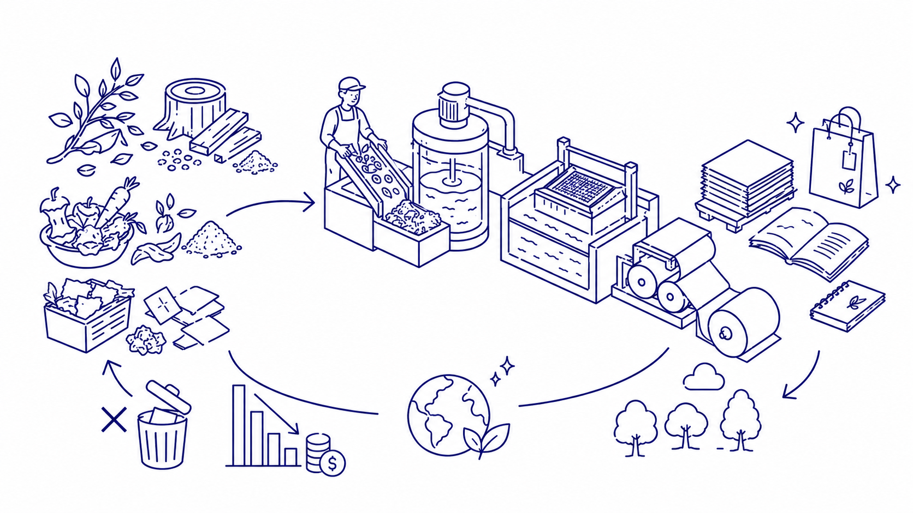
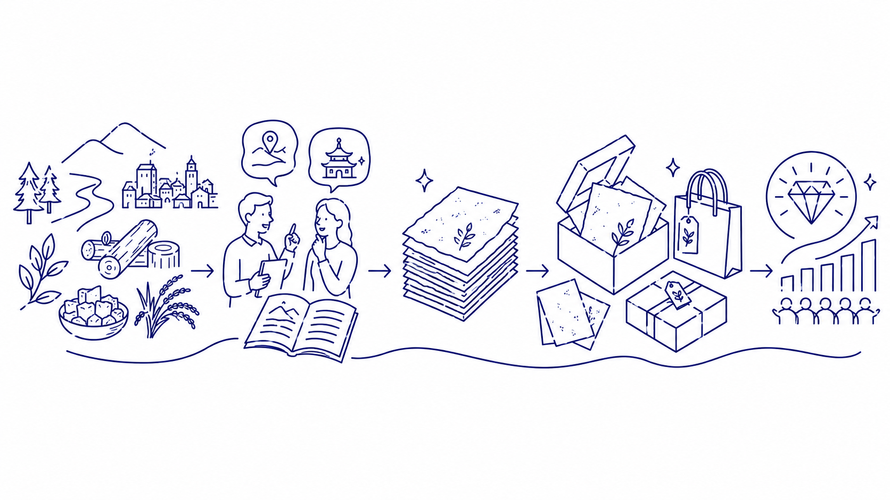
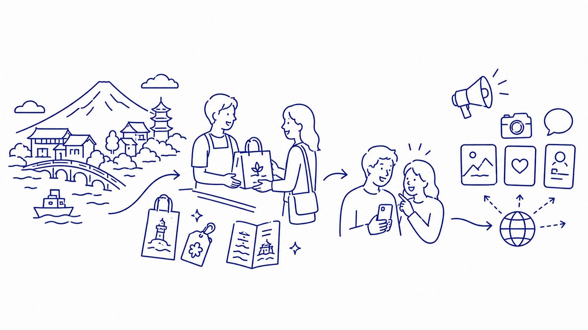
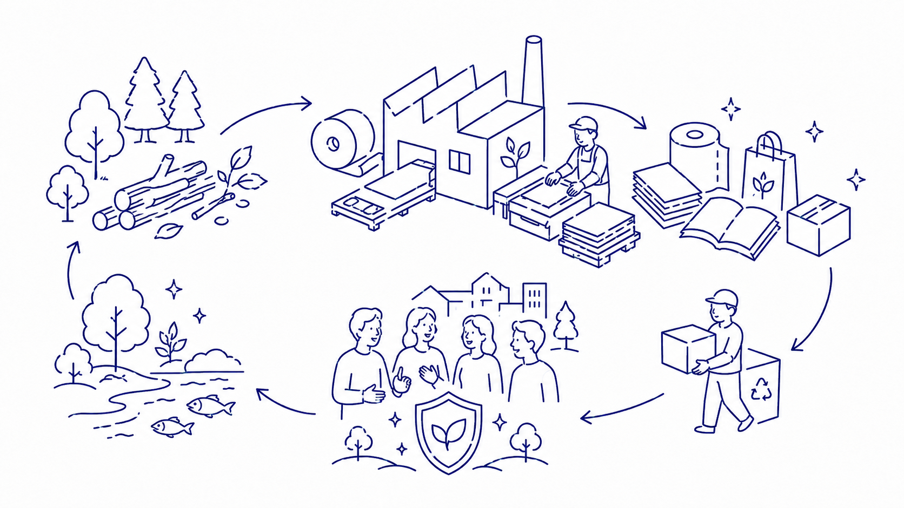
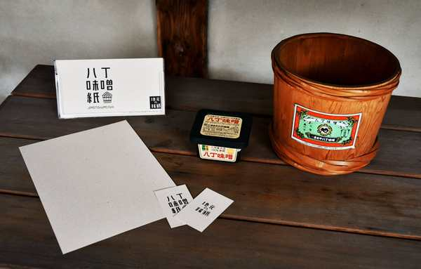

地域で生まれる素材や加工残渣、副産物を活用し、地域の物語をまとった紙へと再生します。
地元生産者、企業、自治体と連携し、名刺、パッケージ、包装紙、冊子、ノベルティなどへ展開することで、廃棄物削減だけでなく、ブランド価値の向上、観光・PR効果、地域経済の循環につなげます。

廃棄物削減
加工残渣・副産物を紙の原料としてアップサイクル。廃棄コストの削減と環境負荷低減を同時に実現します。

ブランド価値向上
地域の素材と物語が宿った紙は、他にはない唯一の素材。商品・サービスの差別化につながります。

観光・PR効果
地域のストーリーを持つ紙製品はお土産・ノベルティとしても人気。地域の魅力を広く発信します。

環境負荷低減
地域内でのサーキュラーエコノミーを実現。SDGs・サステナブルな取り組みとしてアピールできます。
FEATURED PROJECT
 八丁味噌紙
八丁味噌紙
岡崎が誇る伝統産業「八丁味噌」の製造過程で生まれる味噌粕を活用した地域ブランド紙。独自の風合いと質感を持つこの紙は、名刺、パッケージ、ノベルティとして地域のブランドを彩ります。

展開・活用例
| 名刺・ショップカード | 地域の素材を使った名刺は手渡した瞬間から会話が生まれます。企業・店舗のブランディングに。 |
|---|---|
| パッケージ・包装紙 | 商品の価値をさらに高める地域素材の包装。贈答品・お土産の付加価値アップに。 |
| 冊子・リーフレット | 地域の物語を纏った冊子。観光パンフレット、商品カタログ、会社案内など。 |
| ノベルティ・店舗POP | イベントノベルティ、店頭POP、ハンドタグなど。地域色を表現するアイテムに。 |
こんな方にご相談ください
- 地域資源や加工残渣・副産物の活用方法を探している
- 企業・商品のブランディングに地域性を取り入れたい
- SDGs・サステナブルな取り組みを対外的にアピールしたい
- 地域の観光・PR素材として使えるものを作りたい
- 自治体や生産者と連携した地域振興プロジェクトを検討している